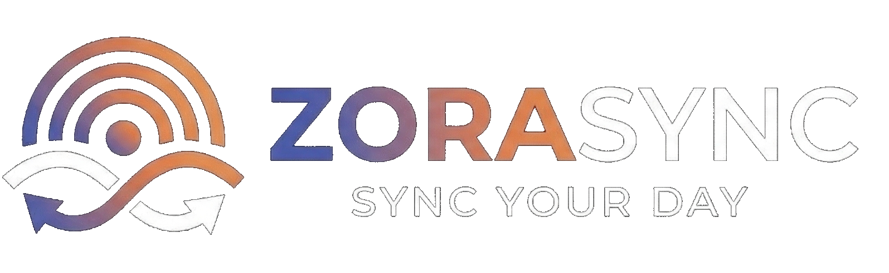

ZoraSync helps you capture conversations, organize your thoughts, and turn them into structured tasks, summaries, and next steps.
Stay focused on what matters. ZoraSync removes the friction between conversations and execution, helping you stay organized, productive, and in control of your day.
Your data belongs to you. ZoraSync is built with privacy, security, and transparency in mind.